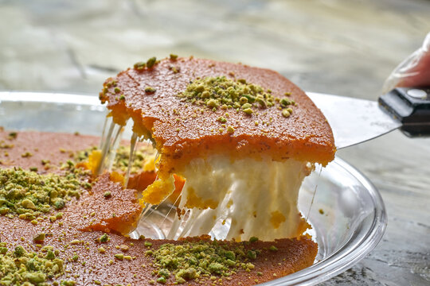

Hyderabadi Goat Biryani
Home

Description
Kunafa is a rich Middle Eastern dessert made with crispy shredded phyllo dough layered around a creamy or cheesy
filling, then soaked in fragrant sugar syrup. It is known for its contrast of textures — crunchy golden pastry
on the outside with a soft, warm center inside. Pistachios are often sprinkled on top for extra flavor and
color.
Kunafa is especially popular during Ramadan and celebrations across countries like Palestine, Turkey, Lebanon,
and Egypt. Depending on the region, the filling may use sweet cheese, clotted cream, or custard. The dessert is
typically served warm so the filling stays soft and stretchy while the syrup keeps everything moist and
aromatic.
Ingrediants
For the Sugar Syrup
- 1 cup sugar
- ¾ cup water
- 1 tsp lemon juice
- 1 tsp rose water or orange blossom water
For the Kunafa
- 400 g kunafa dough (shredded phyllo pastry)
- 150 g unsalted butter, melted
- 2 tbsp sugar
Filling options
- 2 cups mozzarella cheese (low-moisture)
- or
- 2 cups sweet cream/custard
Garnish
Steps
- Prepare the sugar syrup by combining sugar, water, and lemon juice in a saucepan.
- Bring the syrup to a boil and simmer for 8–10 minutes until slightly thickened.
- Stir in rose water or orange blossom water and let the syrup cool completely.
- Preheat the oven to 180°C (350°F).
- Separate the kunafa dough strands using your hands.
- Mix the shredded dough with melted butter and sugar until evenly coated.
- Grease a round baking pan with butter.
- Press half of the buttered kunafa dough firmly into the bottom of the pan.
- Spread the cheese or cream filling evenly over the base.
- Cover the filling with the remaining kunafa dough and press gently.
- Bake for 30–40 minutes until the top becomes deep golden brown and crispy.
- Remove the kunafa from the oven and immediately pour the cooled sugar syrup over the hot pastry.
- Allow the syrup to soak in for a few minutes.
- Garnish with crushed pistachios.
- Serve warm.